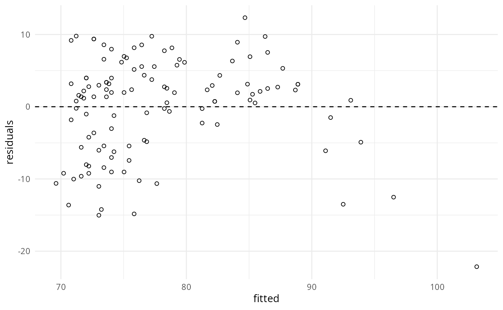
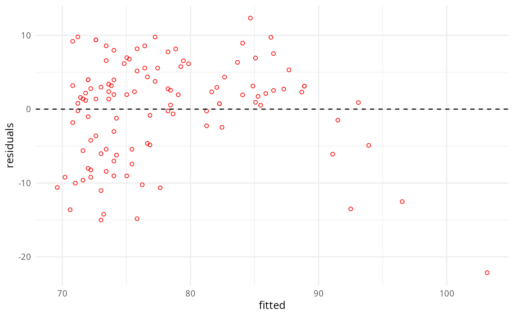
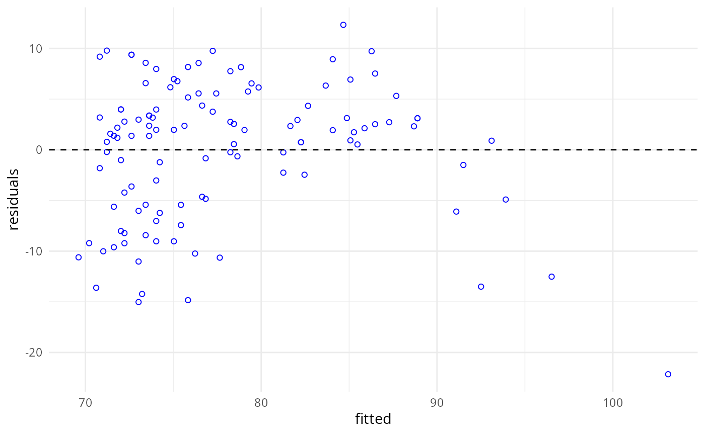

Recursive self-modification
Source:vignettes/v06-self-modify-pipeline.Rmd
v06-self-modify-pipeline.RmdThe {pipeflow} package aims to offer a lean and intuitive interface that enables new users to get started quickly without having to learn a lot of new concepts and functions.
At the same time, it was also designed to provide easy access to the underlying data structures to allow advanced users to modify the pipeline basically in any way they want. As such pipelines not only can be modified before but also during execution, respectively. This opens up a wide range of possibilities, for example, to change parameters based on intermediate results or even to modify the pipeline structure itself during a pipeline run. In the following, we will show some examples of how this can be done.
The pipeline object
Let’s first define a pipeline, which fits a linear model, checks it’s residuals for normality using the Shapiro-Wilk test, and plots the residuals.
library(pipeflow)
pip <- pip_new("my-pipeline") |>
pip_add(
"data",
function(data = NULL) data
) |>
pip_add(
"fit",
function(
data = ~data,
xVar = "x",
yVar = "y"
) {
lm(paste(yVar, "~", xVar), data = data)
}
) |>
pip_add(
"residual_shapiro_p_value",
function(fit = ~fit) {
residuals <- residuals(fit)
shapiro.test(residuals)$p.value
}
) |>
pip_add(
"plot",
function(
fit = ~fit,
pointColor = "black"
) {
require(ggplot2, quietly = TRUE)
data <- data.frame(
fitted = predict(fit),
residuals = residuals(fit)
)
ggplot(data, aes(x = fitted, y = residuals)) +
geom_point(shape = 21, color = pointColor) +
geom_hline(yintercept = 0, linetype = "dashed") +
theme_minimal()
}
)If you have followed the previous vignettes, you by now are used to the pipeline overview.
pip
# <pipeflow_pip> my-pipeline (4 steps)
# ------------------------------------
# step depends out state
# 1: data [NULL] new
# 2: fit data [NULL] new
# 3: residual_shapiro_p_value fit [NULL] new
# 4: plot fit [NULL] newTo inspect the internal structure, let’s start with the class.
class(pip)
# [1] "pipeflow_pip" "environment"As we can see, the pipeline object is stored in an environment.
ls(pip)
# [1] "name" "pipeline"There is the “name” of the pipeline, which is just a character
string. The most interesting object is the “pipeline”, object, which
under the hood is a data.table object containing all the
information about the steps, their dependencies, meta information, and
so on.
data.class(pip$pipeline)
# [1] "data.table"
pip$pipeline
# step fun params signature depends
# <char> <list> <list> <char> <list>
# 1: data <function[1]> <list[1]> (data = NULL)
# 2: fit <function[1]> <list[3]> (data = ~data, xVar = "x", yVar = "y") data
# 3: residual_shapiro_p_value <function[1]> <list[1]> (fit = ~fit) fit
# 4: plot <function[1]> <list[2]> (fit = ~fit, pointColor = "black") fit
# out state tags time locked exec .nodeId .indeps
# <list> <char> <list> <POSc> <lgcl> <char> <int> <list>
# 1: [NULL] new 2026-06-27 20:21:01 FALSE auto 0 data
# 2: [NULL] new 2026-06-27 20:21:01 FALSE auto 1 xVar,yVar
# 3: [NULL] new 2026-06-27 20:21:01 FALSE auto 2
# 4: [NULL] new 2026-06-27 20:21:01 FALSE auto 3 pointColorChanging pipeline parameters at runtime
First, we set some data and parameters and run the pipeline as usual.
pip |> pip_set_params(list(data = airquality, xVar = "Ozone", yVar = "Temp"))
pip_run(pip)
# info [2026-06-27 18:21:01.705 UTC]: Start run of pipeflow_pip 'my-pipeline'
# info [2026-06-27 18:21:01.706 UTC]: Step 1/4 data
# info [2026-06-27 18:21:01.707 UTC]: Step 2/4 fit
# info [2026-06-27 18:21:01.711 UTC]: Step 3/4 residual_shapiro_p_value
# info [2026-06-27 18:21:01.713 UTC]: Step 4/4 plot
# info [2026-06-27 18:21:02.553 UTC]: Finished run of pipeflow_pip 'my-pipeline'
pip[["plot", "out"]]
Now let’s imagine, we want to change the color of the points in the
plot depending on the Shapiro-Wilk test result. The obvious way to do
this would be to change the plot step by passing the test
result to the plot step function and change the color
there.
However, here we are interested in another way that would keep the
plot function unchanged. For example, we could run the
pipeline a second time as follows:
if (pip[["residual_shapiro_p_value", "out"]] < 0.05) {
pip |>
pip_set_params(list(pointColor = "red")) |>
pip_run()
}
# info [2026-06-27 18:21:02.891 UTC]: Start run of pipeflow_pip 'my-pipeline'
# info [2026-06-27 18:21:02.892 UTC]: Step 1/4 data - skipping done step
# info [2026-06-27 18:21:02.892 UTC]: Step 2/4 fit - skipping done step
# info [2026-06-27 18:21:02.892 UTC]: Step 3/4 residual_shapiro_p_value - skipping done step
# info [2026-06-27 18:21:02.892 UTC]: Step 4/4 plot
# info [2026-06-27 18:21:02.934 UTC]: Finished run of pipeflow_pip 'my-pipeline'
pip[["plot", "out"]]
As was mentioned in another vignette, this solution is not ideal, as it requires to run additional code around the pipeline. We rather want to set the parameter from within the pipeline during execution.
Luckily, the pipeline by default provides a self-reference in the
form of the .self parameter that potentially can be used in
any step function. With this in mind, we can update the
residual_shapiro_p_value step to change the
pointColor parameter on the fly.
pip |> pip_replace(
"residual_shapiro_p_value",
function(
fit = ~fit,
.self = NULL
) {
residuals <- residuals(fit)
p <- shapiro.test(residuals)$p.value
if (p < 0.05) {
.self |> pip_set_params(list(pointColor = "blue"))
}
p
}
)Now we can run the pipeline again and see that the color of the points has changed.
pip_run(pip)
# info [2026-06-27 18:21:03.275 UTC]: Start run of pipeflow_pip 'my-pipeline'
# info [2026-06-27 18:21:03.275 UTC]: Step 1/4 data - skipping done step
# info [2026-06-27 18:21:03.275 UTC]: Step 2/4 fit - skipping done step
# info [2026-06-27 18:21:03.276 UTC]: Step 3/4 residual_shapiro_p_value
# info [2026-06-27 18:21:03.280 UTC]: Step 4/4 plot
# info [2026-06-27 18:21:03.384 UTC]: Finished run of pipeflow_pip 'my-pipeline'
pip[["plot", "out"]]
As we will show in the next section, modications of the pipeline at runtime are not limited to changing parameters but can also be used to modify the very own pipeline structure.
Changing pipeline structure at runtime
Subsequently, the pipeline steps will be comprised only of very basic functions in order to keep matters simple. The focus here should be on the pipeline structure and how it is modified.
pip <- pip_new("my-pipeline") |>
pip_add("init", function(xInit = 0) xInit) |>
pip_add("f1", function(x = ~init) x + 1) |>
pip_add("f2", function(x = ~f1) x + 2) |>
pip_add("f3", function(x = ~f2) x + 3)This pipeline just adds 1, 2, and 3 to the initial value, respectively.
pip_run(pip)
# info [2026-06-27 18:21:03.792 UTC]: Start run of pipeflow_pip 'my-pipeline'
# info [2026-06-27 18:21:03.792 UTC]: Step 1/4 init
# info [2026-06-27 18:21:03.794 UTC]: Step 2/4 f1
# info [2026-06-27 18:21:03.796 UTC]: Step 3/4 f2
# info [2026-06-27 18:21:03.801 UTC]: Step 4/4 f3
# info [2026-06-27 18:21:03.803 UTC]: Finished run of pipeflow_pip 'my-pipeline'
pip
# <pipeflow_pip> my-pipeline (4 steps)
# ------------------------------------
# step depends out state
# 1: init 0 done
# 2: f1 init 1 done
# 3: f2 f1 3 done
# 4: f3 f2 6 doneThe out column in the table shows the output of each
step. Now let’s modify step f2 that in turn will modify
f3 at runtime based on the interim result passed into
f2.
Modify steps
pip |> pip_replace(
"f2",
function(
x = ~f1,
.self = NULL
) {
if (x > 10) {
.self |> pip_replace("f3", function(x = ~f1) x * 3)
return(x / 2)
}
x + 2
}
)Basically, step f2 now checks if the input is greater
than 10, and if so, it replaces step f3 with a new step now
referencing f1 that multiplies the input passed from
f1 by 3 and returns half of the input.
To see this, let’s try it with an input of 15.
pip |>
pip_set_params(list(xInit = 15)) |>
pip_run()
# info [2026-06-27 18:21:03.929 UTC]: Start run of pipeflow_pip 'my-pipeline'
# info [2026-06-27 18:21:03.929 UTC]: Step 1/4 init
# info [2026-06-27 18:21:03.930 UTC]: Step 2/4 f1
# info [2026-06-27 18:21:03.933 UTC]: Step 3/4 f2
# info [2026-06-27 18:21:03.937 UTC]: Step 4/4 f3
# info [2026-06-27 18:21:03.939 UTC]: Finished run of pipeflow_pip 'my-pipeline'
pip
# <pipeflow_pip> my-pipeline (4 steps)
# ------------------------------------
# step depends out state
# 1: init 15 done
# 2: f1 init 16 done
# 3: f2 f1 8 done
# 4: f3 f1 48 doneWe see that both the output of the pipeline and the dependencies of the last step have changed. Let’s confirm by inspecting the function of the last step.
pip[["f3", "fun"]]
# function (x = ~f1)
# x * 3
# <environment: 0x00000206dbfb22e8>Insert and remove steps
For our last example, we get even more hacky and instead of just replacing, we will go a bit further to insert and remove steps. The pipeline definition is as follows:
pip <- pip_new("my-pipeline") |>
pip_add("init", function(xInit = 0) xInit) |>
pip_add("f1", function(x = ~init) x + 1) |>
pip_add(
"f2",
function(
x = ~f1,
.self = NULL
) {
if (x > 10) {
.self |>
pip_add(
"f2a",
function(x = ~f1) x + 21,
after = "f1",
) |>
pip_add(
"f2b",
function(x = ~f2a) x + 22,
after = "f2a"
) |>
pip_replace(
"f3",
function(x = ~f2b) {
x + 30
}
) |>
pip_remove("f2")
}
x + 2
}
) |>
pip_add("f3", function(x = ~f2) x + 3)Basically, if the input is greater than 10, we insert two new steps
f2a and f2b after f1, remove
f2, and replace f3 with a new step that adds
30 to the input. Let’s first run with the initial value of 0 to see the
original output.
pip_run(pip)
# info [2026-06-27 18:21:04.117 UTC]: Start run of pipeflow_pip 'my-pipeline'
# info [2026-06-27 18:21:04.118 UTC]: Step 1/4 init
# info [2026-06-27 18:21:04.118 UTC]: Step 2/4 f1
# info [2026-06-27 18:21:04.120 UTC]: Step 3/4 f2
# info [2026-06-27 18:21:04.124 UTC]: Step 4/4 f3
# info [2026-06-27 18:21:04.125 UTC]: Finished run of pipeflow_pip 'my-pipeline'
pip
# <pipeflow_pip> my-pipeline (4 steps)
# ------------------------------------
# step depends out state
# 1: init 0 done
# 2: f1 init 1 done
# 3: f2 f1 3 done
# 4: f3 f2 6 doneNext, we set the initial value to 11 to trigger the changes.
pip |>
pip_set_params(list(xInit = 11)) |>
pip_run()
# info [2026-06-27 18:21:04.198 UTC]: Start run of pipeflow_pip 'my-pipeline'
# info [2026-06-27 18:21:04.199 UTC]: Step 1/4 init
# info [2026-06-27 18:21:04.199 UTC]: Step 2/4 f1
# info [2026-06-27 18:21:04.202 UTC]: Step 3/4 f2
# info [2026-06-27 18:21:04.244 UTC]: Step 4/4 f3
# info [2026-06-27 18:21:04.245 UTC]: Finished run of pipeflow_pip 'my-pipeline'
pip
# <pipeflow_pip> my-pipeline (5 steps)
# ------------------------------------
# step depends out state
# 1: init 11 done
# 2: f1 init 12 done
# 3: f2a f1 [NULL] new
# 4: f2b f2a done
# 5: f3 f2b [NULL] newWhile the structure has changed as expected, some steps were not yet
run. In fact, since originally step f3came after
f2, and in contrast to what the log is showing, instead of
step f3, actually the new step f2b was run1 , albeit
with x = NULL as input.
So to have the true results, we need to re-init the parameter and need to re-run the pipeline.
pip |>
pip_set_params(list(xInit = 11)) |>
pip_run()
# info [2026-06-27 18:21:04.322 UTC]: Start run of pipeflow_pip 'my-pipeline'
# info [2026-06-27 18:21:04.323 UTC]: Step 1/5 init
# info [2026-06-27 18:21:04.323 UTC]: Step 2/5 f1
# info [2026-06-27 18:21:04.326 UTC]: Step 3/5 f2a
# info [2026-06-27 18:21:04.330 UTC]: Step 4/5 f2b
# info [2026-06-27 18:21:04.332 UTC]: Step 5/5 f3
# info [2026-06-27 18:21:04.334 UTC]: Finished run of pipeflow_pip 'my-pipeline'
pip
# <pipeflow_pip> my-pipeline (5 steps)
# ------------------------------------
# step depends out state
# 1: init 11 done
# 2: f1 init 12 done
# 3: f2a f1 33 done
# 4: f2b f2a 55 done
# 5: f3 f2b 85 doneNow the output of all steps is as expected. If we want to use
{pipeflow} in production, obviously, having to re-run the pipeline and
temporarily showing a wrong log is not ideal. Ideally, the pipeline run
would be aborted right after all changes were done in f2
and the pipeline re-run automatically from the beginning. Also, this
process potentially should be repeated recursively until the structure
does not change anymore.
Luckily, with some minimal changes, this behaviour can be achieved
with {pipeflow}. First, for any step where you want to restart the
pipeline run, you need to return the pipeline object, so we adapt the
f2 function as follows:
pip <- pip_new("my-pipeline") |>
pip_add("init", function(xInit = 0) xInit) |>
pip_add("f1", function(x = ~init) x + 1) |>
pip_add(
"f2",
function(
x = ~f1,
.self = NULL
) {
if (x > 10) {
.self |>
pip_add(
"f2a",
function(x = ~f1) x + 21,
after = "f1",
) |>
pip_add(
"f2b",
function(x = ~f2a) x + 22,
after = "f2a"
) |>
pip_replace(
"f3",
function(x = ~f2b) {
x + 30
}
) |>
pip_remove("f2")
return(.self) # <-- return modified pipeline
}
x + 2
}
) |>
pip_add("f3", function(x = ~f2) x + 3)Second, you need to run the pipeline with
recursive = TRUE.
pip |>
pip_set_params(list(xInit = 11)) |>
pip_run(recursive = TRUE)
# info [2026-06-27 18:21:04.475 UTC]: Start run of pipeflow_pip 'my-pipeline'
# info [2026-06-27 18:21:04.475 UTC]: Step 1/4 init
# info [2026-06-27 18:21:04.476 UTC]: Step 2/4 f1
# info [2026-06-27 18:21:04.478 UTC]: Step 3/4 f2
# info [2026-06-27 18:21:04.500 UTC]: Abort pipeline execution and restart on returned pipeline.
# info [2026-06-27 18:21:04.500 UTC]: Start run of pipeflow_pip 'my-pipeline'
# info [2026-06-27 18:21:04.500 UTC]: Step 1/5 init
# info [2026-06-27 18:21:04.500 UTC]: Step 2/5 f1
# info [2026-06-27 18:21:04.502 UTC]: Step 3/5 f2a
# info [2026-06-27 18:21:04.504 UTC]: Step 4/5 f2b
# info [2026-06-27 18:21:04.506 UTC]: Step 5/5 f3
# info [2026-06-27 18:21:04.508 UTC]: Finished run of pipeflow_pip 'my-pipeline'As you can see, the run is now automatically aborted right after the
pipeline was modified and, since we have set
recursive = TRUE, the pipeline is also restarted
automatically based on the new structure. As a result, the log now is
fully aligned with the performed pipeline run.
Looking at the final pipeline overview, we see that the output matches the expected output of the modified pipeline.
pip
# <pipeflow_pip> my-pipeline (5 steps)
# ------------------------------------
# step depends out state
# 1: init 11 done
# 2: f1 init 12 done
# 3: f2a f1 33 done
# 4: f2b f2a 55 done
# 5: f3 f2b 85 doneOf course, this was just a silly example to show some possibilities, but I have made use of this feature already in various projects and may present one of them in a more sophisticated example in the future.
Lastly note that since you have full access to the pipeline object,
of course, you can get even more hacky, but be aware that some
additional operations are done under the hood when steps are added or
removed. It is therefore not recommended to “manually” manipulate the
internal data.table object in terms of removing or adding rows, or
changing important columns such as depends or
.nodeId as this immediately would invalidate the internal
consistency of the dependency graph.
On the other hand, changing entries in columns such as
tags, time, state or
output is generally not critical. If in doubt, just try and
see what works.